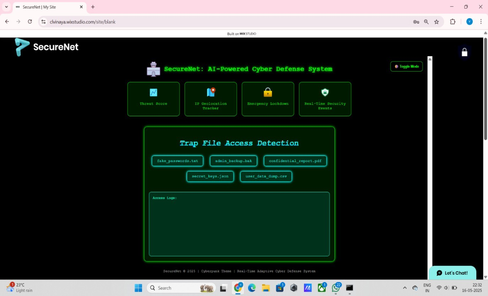
SecureNet is an AI-powered cyber defense platform designed to simulate and visualize modern cybersecurity operations. The platform integrates real-time threat monitoring, IP geolocation tracking, emergency lockdown protocols, MirrorNet deception technology, quantum cryptography simulation, trap file detection and intelligent security analytics.
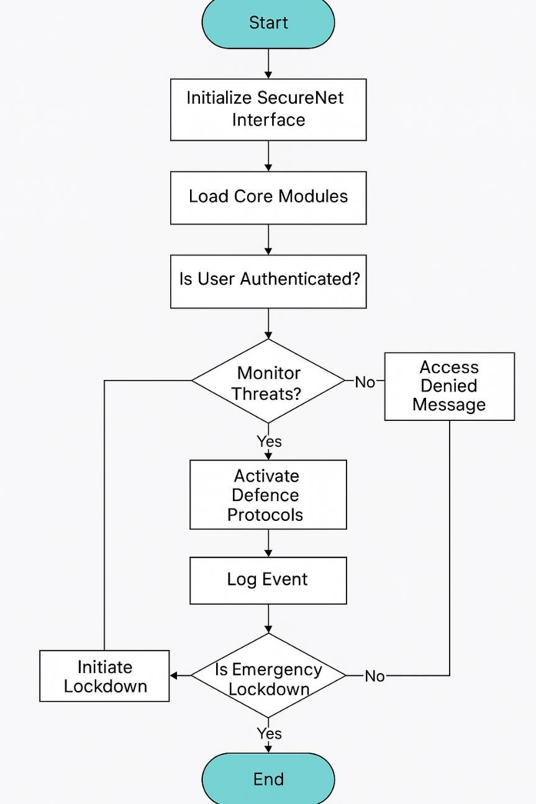
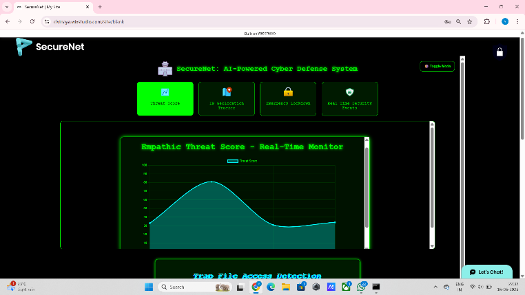
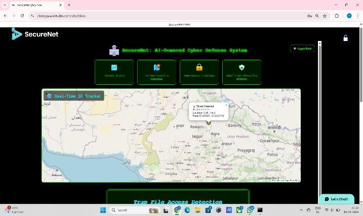
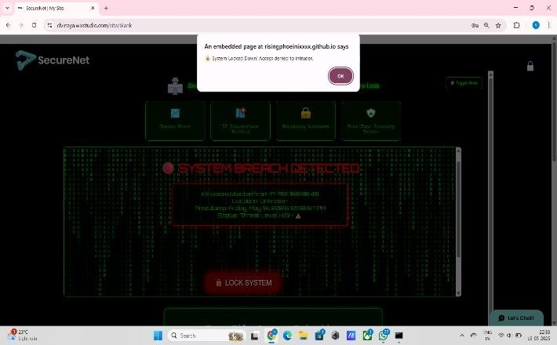
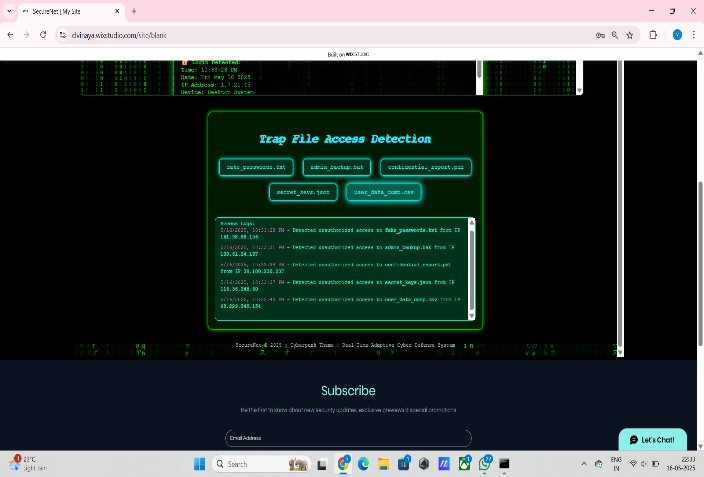
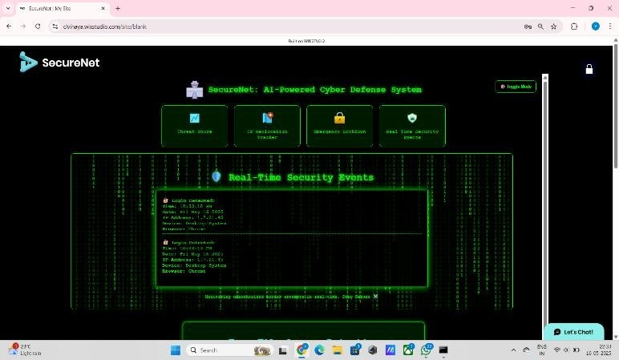
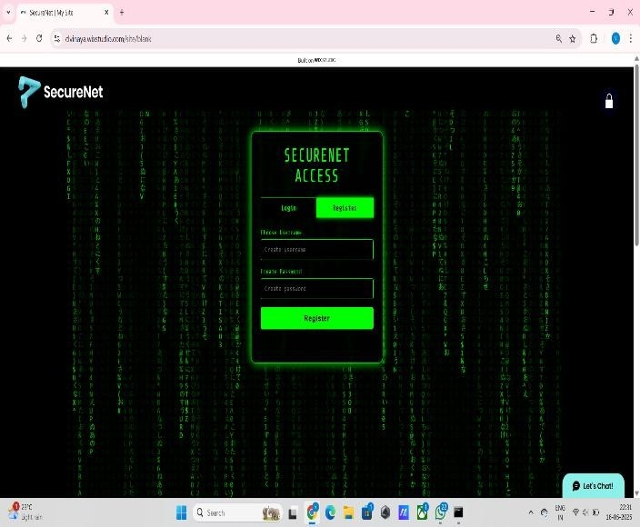
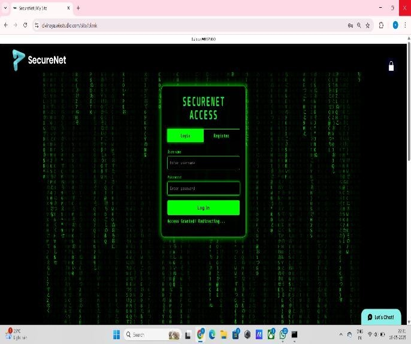
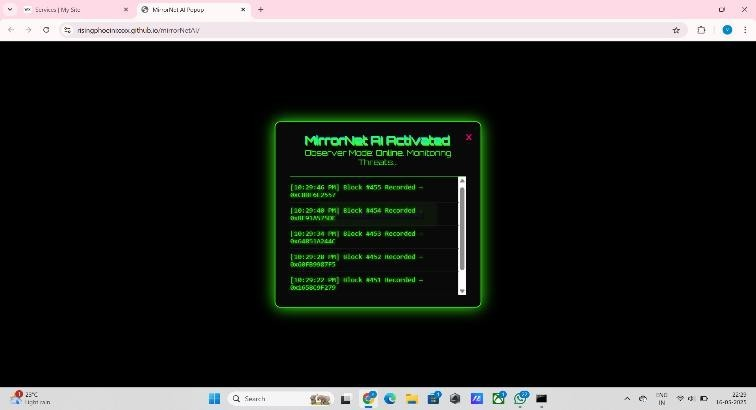
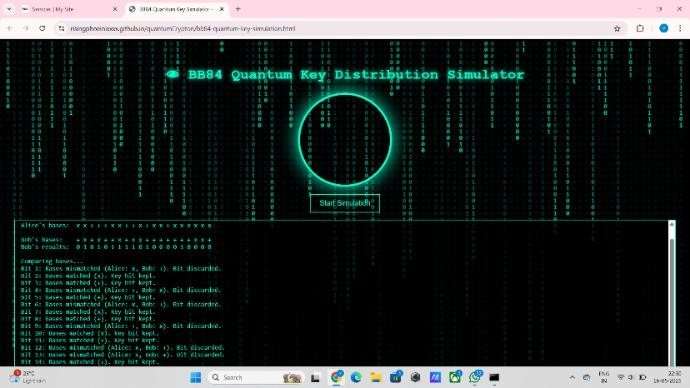
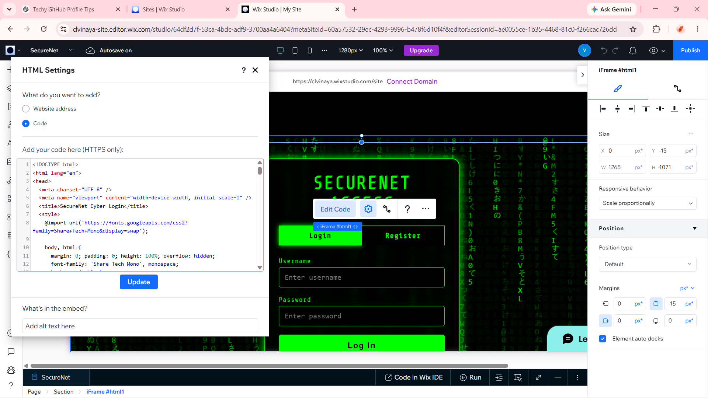